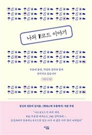

나의 F코드 이야기, 2020
이하늬
15
자신이 병들어 있음을 아는 것은, 치유가 아니라 할지라도 치유의 첫 단계일 수는 있다.이성복, 뒹구는 돌은 언제 잠 깨는가
27
그 어떠한 짐승도 스스로에게 왜 사는가에 대한 의문을 품지 않는다.작가 이응준
45
오랜 연애를 끝낸 사람들는 그런 말은 한다. 다시 누군가에게 나를 설명하고 누군가를 처음부터 하나하나 알아가는 과정을 반복해야 하는 일이 버겁다고.
46
그럼에도 우리는 오랜 관계를 끝내고 새로운 관계로 간다. 무언가 어긋났다는 생각이 드는 관계를 이어가는 것은 득이 되지 않음을 알기 | 때문이다. 그리도 그 관계를 붙잡고 있는 것이
새로운 관계를 시작하는 것보다 적은 에너지가 드는 일도 아님을 결국은 알데 되기 때문이다.
Essays in Love, 1993
Alain de Botton
37
"어쩌면 그냥 슬픈 얘기일지도 모르죠. 두 사람은 똑같은 기대를 안고 사귀어야 해요. 서로 똑같이 줄 준비가 된 상태에서 말이에요. 한쪽은 그저 한번 즐기고 싶어하고 다른 쪽은 진정한
사랑을 원하면 안 된다는 거죠. 거기서 모든 괴로움이 생기는 것 같아요..
41
물론 침묵과 서툰 태도는 욕망의 애처로운 증거로 여길 수 있다. 별로 마음이 끌리지 않는 사람은 유혹하기가 쉽기 때문에, 유혹에 서툰 사람이 오히려 진정한 마음을 가진 사람이라고 관대하게
봐줄 수도 있다. 정확한 말을 찾지 못한다는 것은 역설적으로 정환한 말을 의도하고 있다는 증거가 되는 경우가 많다.... 진정한 욕망은 명료한 표현이 불가능하다.
48
나는 다른 사람에게 끌리는 것은 곧 나의 모든 개인적 특징들을 버리는 것이라고 결론을 내렸다. 나의 진짜 자아는 사랑하는 사람에게서 발견되는 완벽성과 화해 불가능한 갈등관계에 있으며,
따라서 무가치할 수밖에 없기 떄문이다.